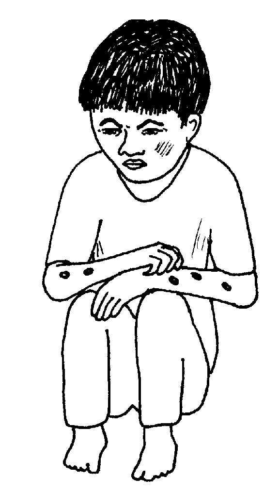
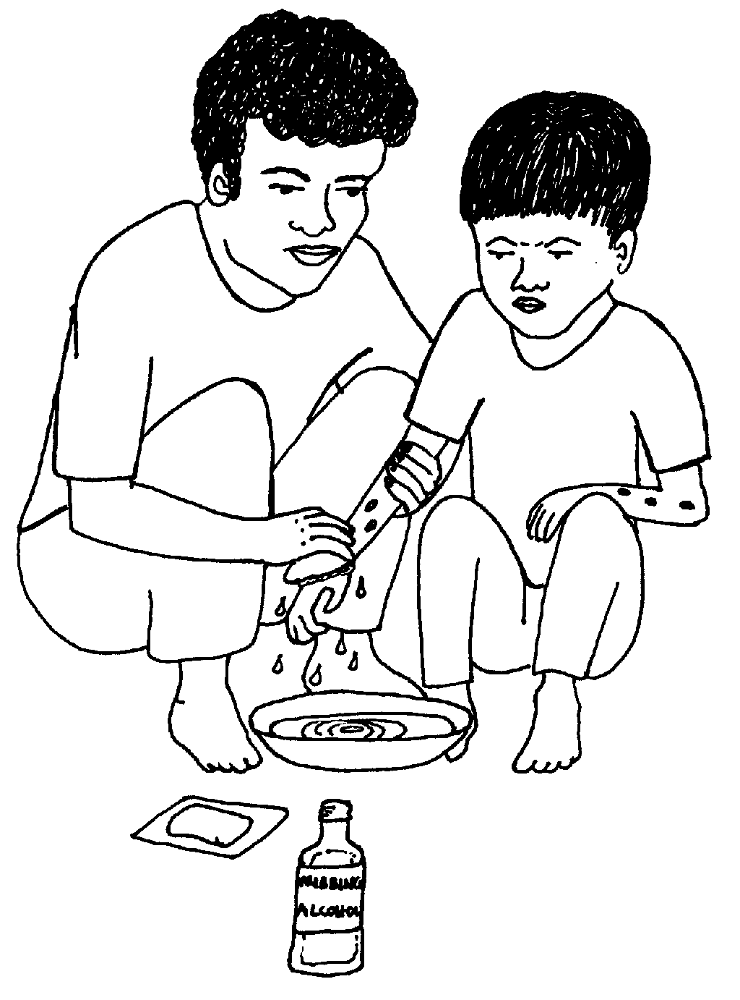
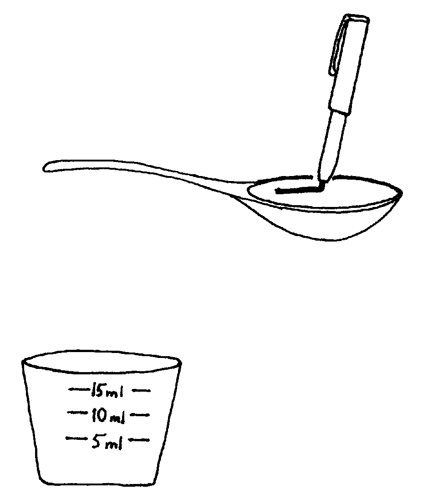
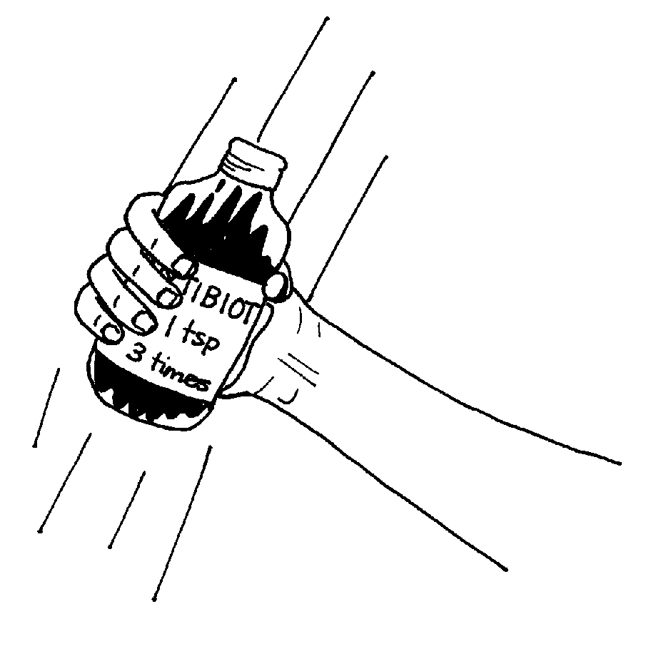
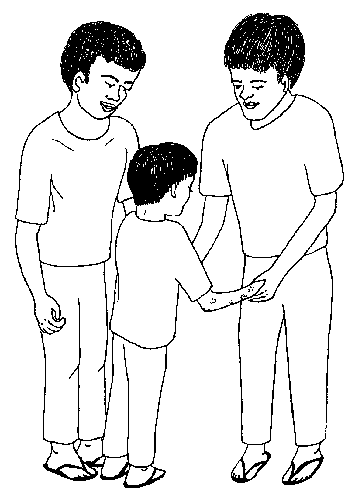

Matigsalug Manobo Healthbooks
Previous Healthbook Up to main Healthbooks page Next Healthbook
Vernacular Lexicon
A
B
BAP
BL
D
E
G
H
I
K
KI
L
LA
LIP
M
N
O
P
PA
R
S
SE
SIN
T
TE
TIN
U
V
W
Y
Z
Healthbooks
Masalig amana ka migpangahatan te higtek diyet belad ni Wanitu te anak ni Biltu.

Tenged teg dehes ka impangahatan te higtek, impangutkut e ni Wanitu piru malindit ka belad din.
Te ware naluhey duen e nakaseled ne kahew diyet ingkutkutan din wey nataman migkekehang e.
Puun due, inlusungan e sikandin wey migpanibbi e.
In-uyan ni Biltu si Wanitu diyet ki Inuk te barangay health worker dan su nalaggew sikandin te migmasumpit e kag geramen ni Wanitu puun te ingkahatan te higtek.
Te pegtengteng ni Inuk te impangahatan te higtek, migmallalab e wey migmanlebag e wey mignenane e. Wey nakita rin man-e ne egpanibbiyen e si Wanitu wey miglusungan e te kasakit wey due malalab ne nakatulis ne migpuun te migkekehang peendiye te ilek.
Ne migkahi e si Inuk te, “Migkekehang sika se ingkahatan te higtek tenged su ingkutkut nu te belad nu ne malindit.”
Ne migkahiyan din si Biltu te, “Egbehayan ku sikeykew te antibayutik ne eg-inumen din su eyew egpatey ka me kahew ne mig-ugpe due.

“Keilangan ne tagse aldew egdihusen nu sikandin su eyew egmalinis. Neg kataman lakulasi nu te alkuhul su eyew egpatey ka me kahew.”
Ne mig-inse si Biltu ki Inuk te, “Nekey-a kag gimuwen te anak ku kayi te bawi?”
Ne migkahi si Inuk te, “Meupiya amana te mig-inse ka su amanan ispurtanti neg kateu ki keg menuwen teg inum ka bawi te malehet ne paahi.”
Ne migpabulus sikandin ka migkahi te, “Keilangan neg inum si Wanitu te antibayutik te katatelu tagse aldew seled te pitun aldew. Keilangan ne kene din eg-engked kag inum sumale te ingkahi ku kandin.”
Kahi man-e nikandin te, “Amanan ispurtanti ne keneg engked kag inum te minsan nekey ne bawi ke kene pad egkahiyan te duktur teg peengkeren e.”
Ne migtabak si Inuk te, “Keilangan neg pabulusan nu teg peinum sumale te ingkahi ku keykew. Su minsan hendue teg keulian din e, piru duen pad kahew ne ware migpatey diyet lawa rin.
“Emun ke kene nud egpeinumen te antibayutik si Wanitu, keneg kaluhey neg deralu e man-e sikandin, wey te seup, kenad mahaan egpatey ka me kahew su egkalayam e te antibayutik.
“Ne puun due, egpakahastu e te dakel ne seleppi ne igbeli te manedted ne bawi ne igbawi te kehang.”
Ne mig-inse si Biltu te, “Nekey naa kag gimuwen ku keg keulian e ka anak ku te me pilan aldew kuntee? Egpabulusan ku naan pad sikandin teg peinum te bawi?”
Ne mig-inse e man-e si Biltu, “Mania teg keiling sika rue?”
Ne migpangguhud si Inuk ne migkahi te, “Ka antibayutik egpekeiling sika te busug neg pekeyimatey te me kahew. Piru ke keneg pabulus eg-inum ka anak nu rue, due duman kahew ne ware pad migpatey wey egkeyimu neg deralu pad man-e sikandin.

“Ne seeye se nasamen kahew, egpanganak pad man-e, neg kataman egmasalig e sikandan. Ne dueg gimuwen dan ne iling te kalasag su eyew minsan keg inum ka man-e te antibayutik, kene dan egpatey. Neg kataman egderalu red man-e ka anak nu.”
Amanan neinu-inu si Biltu te impangguhud ni Inuk kandin.
Ne migpabulus man-e si Inuk ka migkahi te, “Iling ded degma kag keyitabu due ke dueg inum te antibayutik ne napalian de te deisek, wey ke duman dalu ne keneg keulian te antibayutik.
“Ka duman dalu iling te tibi wey pulmunya, mananey egkeulii keg inum de te antibayutik su ka antibayutik kenad egpekeuli te iling due ne dalu.”
Ne migpabulus man-e si Inuk ka migkahi te, “Nalayam e ka me kahew te me antibayutik tenged su malasi eg-inum ka me etew te antibayutik keg deralu te kenen masumpit ne dalu. Ne kuntee, kenad amana egpakabawi ka antibayutik te me masumpit e ne me dalu iling te pulmunya wey tibi.”
Ne migkahi si Biltu te, “Saatu-pa, kene bes ne keilangan neg inum te antibayutik te kenen masumpit ne dalu — wey bes de ke masumpit e ne dalu kag geramen ta?”
Ne migtabak si Inuk ne migkahi te, “Malehet sika.”
Ne mig-inse si Biltu te, “Emun ke sikeddi kag peinum kandin te bawi te katatelu tagse aldew, nekey naa ne uras neg peinumen ku sikandin?”
Ne migtabak si Inuk te, “Keilangan neg peinumen nu sikandin te maselem, meudtu, wey te marusilem. Minsan kene kad egtengteng te uras basta tumana nu re ka ingkahi ku.”
Ne mig-inse si Biltu, “Etuwey keg kalingawan ta?”
Ne migkahi si Inuk te, “Paningkamuti nu ne kene nug kalingawan si Wanitu teg peinum te bawi.
“Piru keg kalingew ka, keilangan ne iling ded due ka igbehey nu kandin keg katanud kad te ware nu napeinum.
“Piru tantanuri nu ne kene nug daruwaa teg peinum te bawi ke nalingew ka neg peinum te an-anayan su delikaddu sika.”
Ne mig-insaan ni Inuk si Biltu, “Due silut diyet baley niyu?”
Ne migtabak si Biltu, “Uya buwa.”
Ne migkahi si Inuk te, “Meupiya! Su amanan ispurtanti neg alenganen niyu ka bawi tagse egpeinum kew, labi e ka me bate.”
Ne migkahi sikandin te, “Kene kag gamit te minsan nekey ne silut diyet kaniyu su kema ke egkasayep kew su delikaddu pe ma.
“Keg uyan ka te silut kayi te keddi, igpapitew ku keykew ke hendei taman ka bawi ne igpeinum kandin wey baglisi ta te palinneuwan su eyew keneg kalaag.”

Ne migkahi si Biltu te, “Meupiya amana sika ne suman-suman su eyew egkanengnengan ku ke kamenu karakel ka igpeinum kandin.”
Mig-inse si Biltu, “Nekey pad man-e ka keilangan neg kanengnengan ku meyitenged te me bawi?”
Ne migkahi si Inuk te, “Keilangan neg kagkahuen nu pad ka bawi su eyew egmekegsewug langun wey henduen pad neg inumen.

“Ka langun ne me bawi ne diye intahu te butilya, keilangan neg kagkahuen pad ne hendue neg gamiten.”
Amana migpasalamat si Biltu ki Inuk te langun ne tambag kandin. Ne puun dutu, amanag bantey si Biltu keg menuwen teg gamit ka me bawi iling te impanulu kandin ni Inuk.
Migginguma ka pilan aldew, bayew egkeulii ka impangahatan te higtek wey ka lusung ni Wanitu. Piru impabulusan pad ni Biltu teg peinum te bawi si Wanitu taman te timpu ne ingkahi ni Inuk kandin.
Impabulusan ni Biltu teg peinum si Wanitu su egkeepes din e neg deralu pad man-e si Wanitu.
Te ware naluhey, nekegkita si Inuk ki Biltu.
Ne mig-inse si Inuk ki Biltu te, “Kumuste e ka anak nu kuntee?”
Ne migkahi si Biltu te, “Neulian e sikandin su amanan nakabulig kandin ka antibayutik.”
Ne migpabulus si Biltu ka migkahi te, “Due narineg ku ne duen kun malitan diyet sabekan bariyu ne mig-inum te antibayutik ne tabalitas su egbuween din wey egnguwehen. Ne tenged dutu, migderehes e ka laplap din wey migmallalab e.”
Ne migtabak si Inuk ne migkahi te, “Malehet sika su sengekakuwa ne delikaddu ka tablitas ke eggamiten te kenen meupiyan peggamit.
“Purisu, kene kig pamehey te me bawi diyet duma su kema ke ware nekeg-iling ka ralu ta.”
Ne migpabulus man-e sikandin ka migpangguhud, “Diyet migkalain-lain ne me bariyu, kene amanag pakabulig ka antibayutik te me iling de due ne me dalu, ka iling te egbuwbuween de, egnguwehen, eg-iindes, wey ka egkekehang.
“Kenen meupiya neg gamitan te antibayutik ka iling de due ne me prublima. Due duma ne bawi te iling due ne me dalu wey amanan manedted ne bawi wey baratu pad man-e.
“Emun keg gamit ki te antibayutik te iling de due ne dalu, egkeyimu ne malised neg kabawian ka masumpit e ne me dalu.”
Amana migpasalamat si Biltu te meupiyan tambag ni Inuk diyet kandin.

Migkahi sikandin te, “Keilangan neg panuluen ta ka me duma ta kayi te bariyu keg menuwen teg gamit te malehet ne paahi ka me bawi. Amana perem egpakabulig ka me bawi ke wey re igpeinum ke malehet ne dalu ka eggeramen.”
Ne migkahi si Inuk te, “Uya perem. Ne keilangan ne panulua nu ka me karumaan ta meyitenged due.”
Ne mig-abey pad man-e sikandin migkahi te, “Seini kag gimuwen ta eyew kene kig dedderalu: keilangan neg pamanihus, egkeen te meupiya neg pakabehey te keupiya te lawa, wey eg-inum te dakel ne weyig. Ne puun due, egkeyimu ne egmeupiya ka me lawa ta wey kene ki amanag keilangan neg beli te me bawi.”
Nekey-a ka tatelun paahi neg gimuwen ta eyew kene kig kehangen?
Nekey-a ka keilangan neg sumsumanen ta ke timpu neg inum ki te antibayutik ke dueg kehangen, egpanibbiyen, eglusungan wey dueg malalab neg pakatulis peendiyet ilek wey ke bilat?
Keilangan naa neg inum ki te antibayutik te langun ne kalasi te dalu? Mania?
Egmenuwen taa teg pakanengneng te malehet ne karakel te bawi ka igpeinum ta?
Nekey ne kalasi te dalu ka keneg kabawian te antibayutik?
Mania te keneg kaayun neg pamehey ki te kanta ne bawi diyet duma ne egkeupian ki man de perem neg bulig kandan ke timpu neg deralu ran?
Ka pinaahi te pegpamanihus, pegkeen te malehet neg keenen, wey eg-inum te malinis ne weyig. (Lukib 83)
Keilangan neg pabulus ki neg inum te bawi sumale te suhu te duktur wey ke health worker naa, wey minsan ke bayew kid egkeulii te dalu ta, keilangan pad neg inum ki. (Lukib 64, 65) Keilangan neg inum te tablitas te maselem, meudtu, wey maapun. (Lukib 71)
Kene. Para re sika te me masumpit ne dalu. Ne emun keg kasublaan teg gamit ka antibayutik, kenad egpekeyimatey te kahew diyet lawa ta su egkalayam e ka me kahew te bawi. (Lukib 68, 69)
Pabaglisi nu te duktur wey ke health worker naa ke hendei lenged diyet silut ka eleg ne igpeinum. (Lukib 75) Keilangan neg kagkahuen pad ka bawi ne diyet butilya, hendueg kuwa te igpeinum. (Lukib 77)
Ka iling te egbuwbuween de, egnguwehen, wey eg iindes, kenen keilangan neg gamitan te antibayutik. (Lukib 81)
Tenged su delikaddu ka bawi, egpakarereet sika ke keneg kaay-ayaran teg gamit. (Lukib 80)
This page last updated: 28-Dec-2019
Copyright © 2009-2010